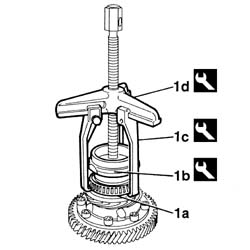
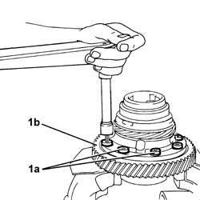
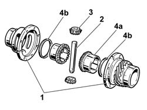
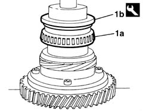

2110D20 differential inner case, removed - dismantle and rebuild, check planet and differential gears
- Path
- Procedures > 21 GEARBOX UNIT > 2110 MANUAL GEARBOX WITH DIFFERENTIAL > 2110D MANUAL GEARBOX DIFFERENTIAL > 2110D20 differential inner case, removed - dismantle and rebuild, check planet and differential gears
- Kind
- repair procedure (removal / refitting; the operation number is the code)
- Applies to
- all engines; all production periods
- Interactive page
- https://sloeber94.github.io/elrnDB-fDbl/en/#/2585318
Applies to: all engines; all production periods
1. Remove bearings (1a) from the inner differential housing using tools (1b), (1c) and (1d).
 | Name | Country |
|---|---|---|
1b | Fitting tool | 1.875.018.000 |
| Name | Country |
|---|---|---|
1c | Extractor Arms | 1.840.005.302 |
| Name | Country |
|---|---|---|
1d | Extractor | 1.840.005.003 |

Applies to: all engines; all production periods
Mark the relative position of the ring gear and the differential internal housing.
1. Undo the bolts (1a) and remove the ring gear (1b).

Applies to: all engines; all production periods
1. Open the differential half-housing.
2. Remove the satellite carrier bearing using a suitable drift.
3. Extract the satellite gears.
4. Remove planet gears (4a) and shims (4b)

Applies to: all engines; all production periods
Check that the satellite and planet gears are intact and that there are no signs of seizing.
Fit the planet gears and adjustment shims.
Fit the satellite gears.
Fit the satellite carrier bearing using a suitable drift.
Fit a new satellite carrier bearing retaining pin using a suitable drift.
Use a screwdriver to check that the differential planet gears fit together properly. Ensure that they turn without play and with slight resistance.
Match the two halves of the differential housing, then fit the ring gear checking the marks made during the dismantling and fix them tightnening the bolts to torque.
 | Fastening | Component | Ø | Value (daNm) |
|---|---|---|---|---|
- | Bolt | DIFF CROWN WHEEL | M11 | 13 |
1. Fit bearings (1a) to the inner differential housing using tool (1b).
| Name | Country |
|---|---|---|
1b | Fitting tool | 1.875.017.000 |
